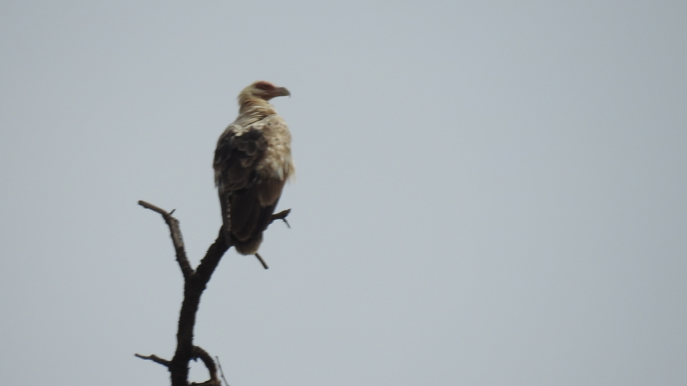
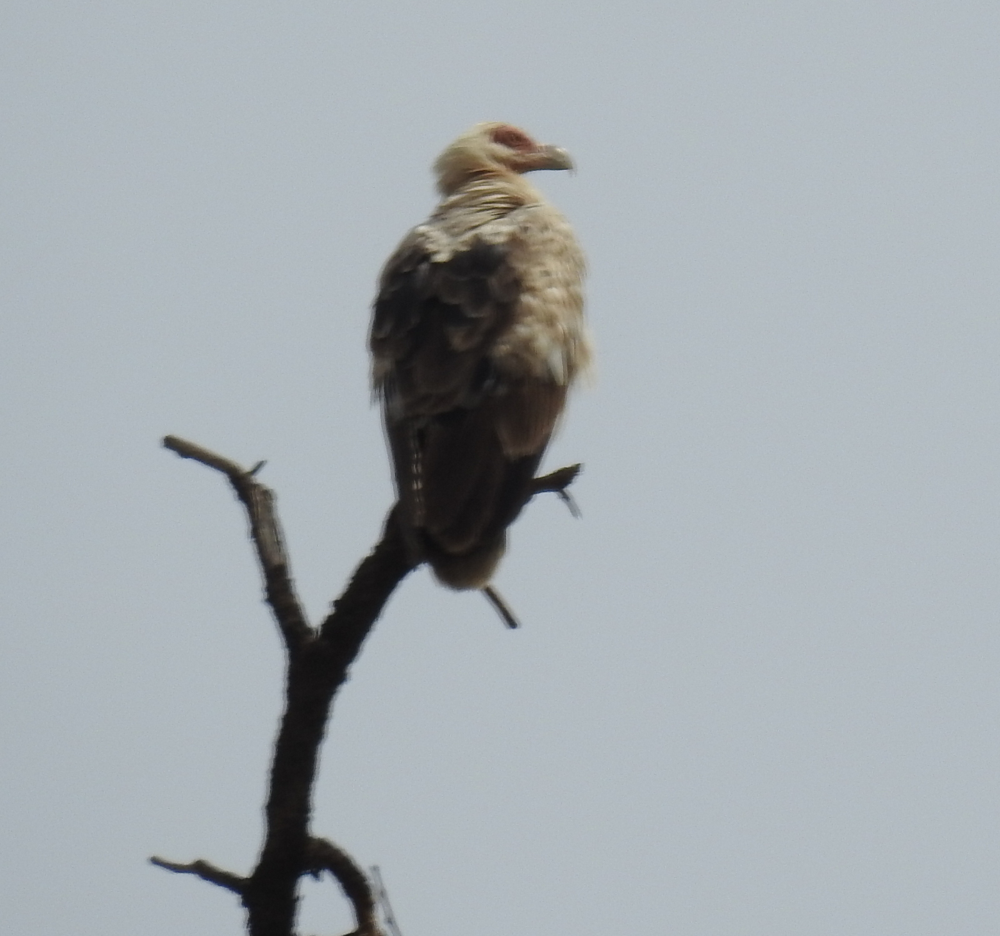

From: Sidney Shema <sidneyshema@gmail.com>
Date: 2018-01-08 19:56
Subject: Palm-nut Vulture
Dear all,
We had an interesting sighting at Lake Nakuru NP during the waterfowl census yesterday - sub-adult Palm-nut Vulture. Photos attached.
Best regards,
Sidney

